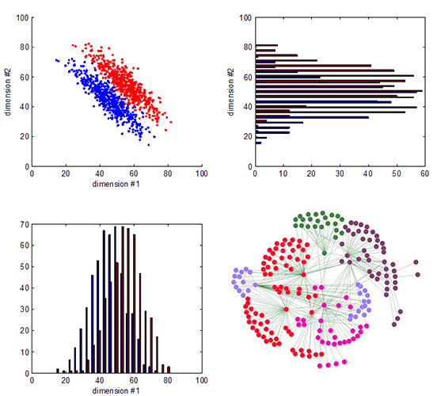

Ingeniería Informática
Charla informativa
Francisco Javier Bolívar Lupiáñez
fblupi.es/charla-informatica-2017Tópicos falsos

Arreglamos ordenadores

No tocas un ordenador en tres años

Hay muchas matemáticas

Lo voy a pasar mal

Perfil del estudiante
- Interés por las innovaciones tecnológicas en la informática
- Capacidades de abstracción e imaginación a la hora de abordar los problemas
- Responsabilidad y constancia en el trabajo
- Competencia lingüística en inglés
- Capacidad de trabajo en equipo
grados.ugr.es/informatica/pages/info_administrativa/acceso
¿Qué se hace entonces en informática?
Diseñar
Pogramar

Analizar
Y muchas otras cosas que no me daría tiempo a contar
La informática está en todos lados

Sí, cuando dije en todos lados es en tooooooodos lados
Y si está en todos lados el mercado laboral...
¡Exacto! ¡Hay trabajo!
Gracias por la atención
¿Alguna pregunta?
Podéis contactar conmigo: fblupi.es Para más información sobre el grado: grados.ugr.es/informatica/